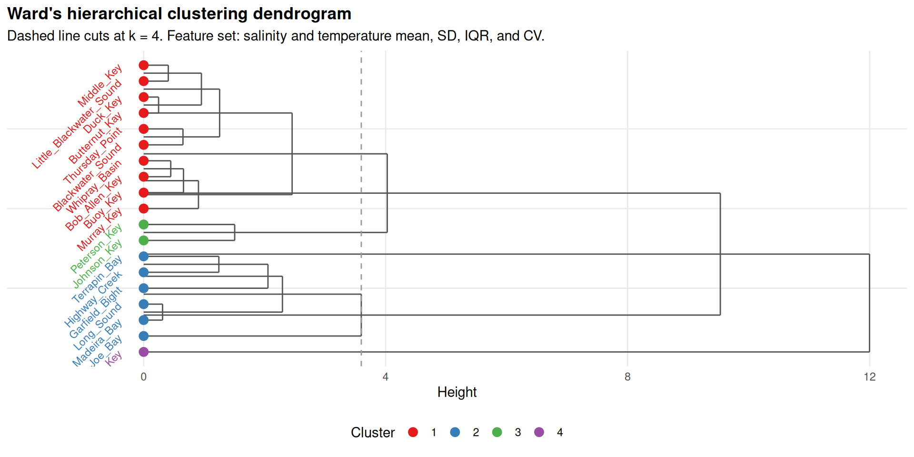
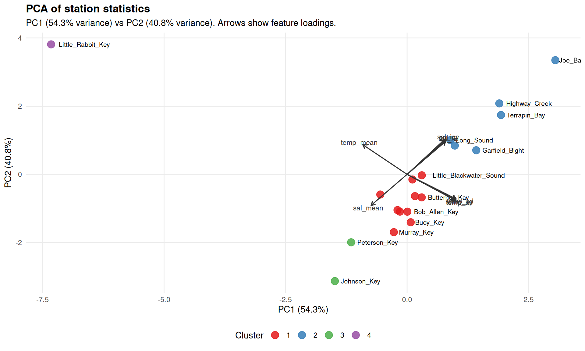
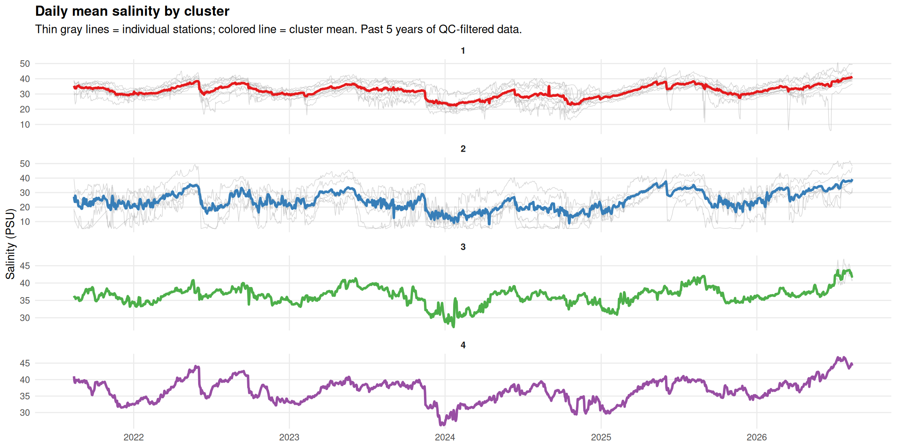
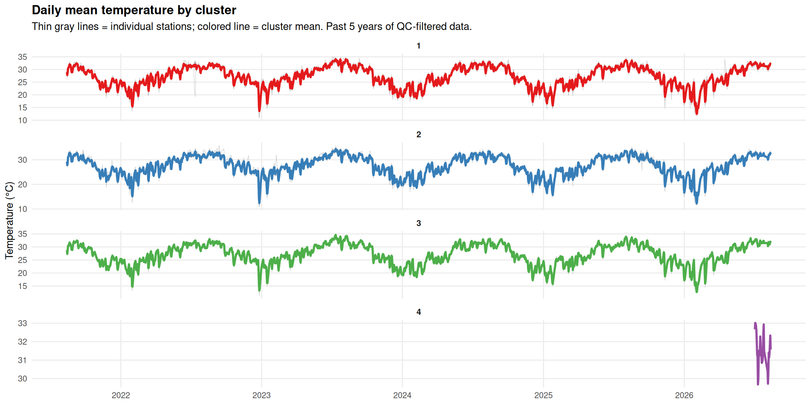
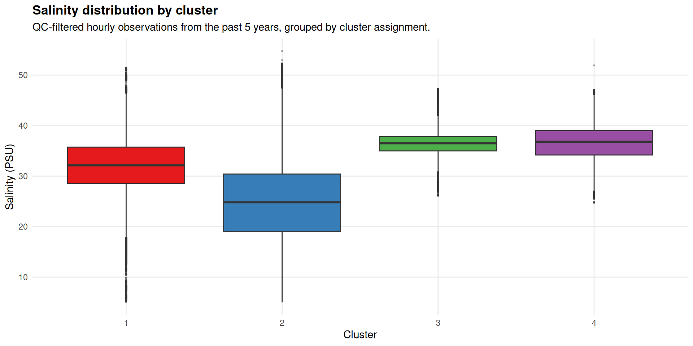
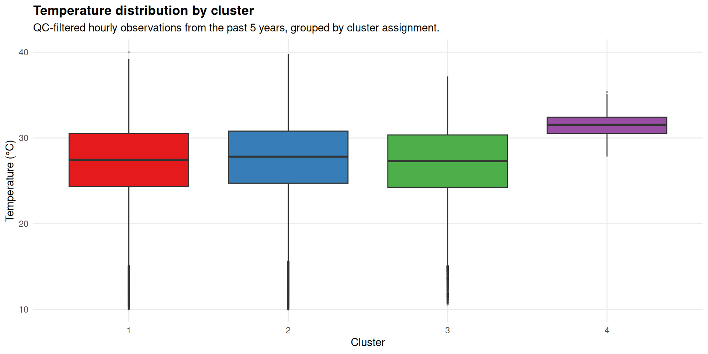
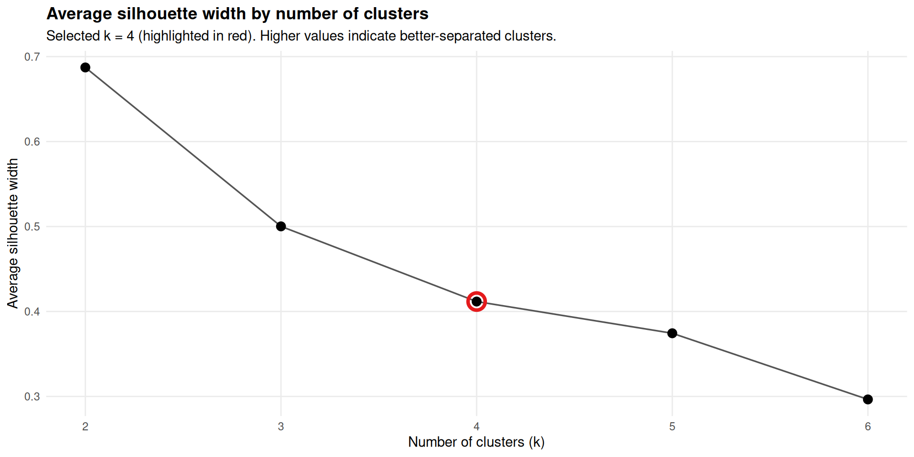
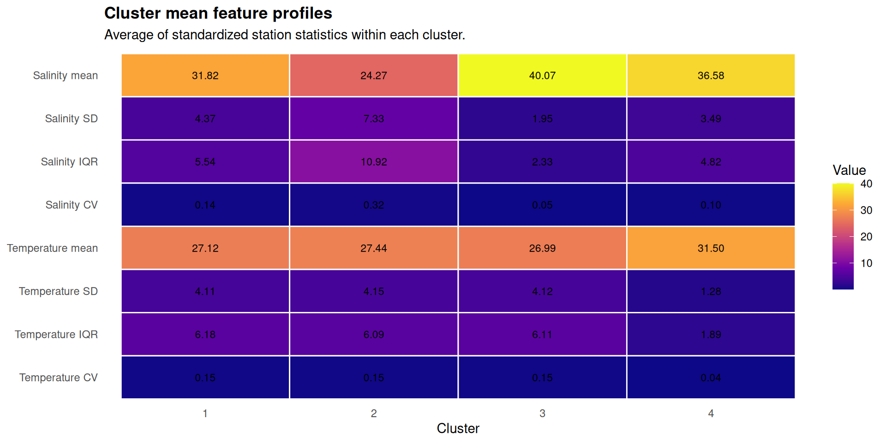

Stations clustered
19
Clusters
4
Lookback period
5 years
Silhouette width at k = 4
0.412
Stations are grouped by hierarchical clustering (Ward’s method, k = 4) on standardized summary statistics computed from the past 5 years of QC-filtered salinity and temperature observations.
The feature set includes the mean, standard deviation, interquartile range, and coefficient of variation for each variable. Silhouette widths for k = 2–6 are shown for reference.
Outliers and sentinel values are removed before computing statistics (salinity 5–55 PSU; temperature 10–40 °C).
Report: 2026-08-26 14:20 EDT







